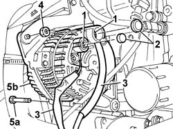
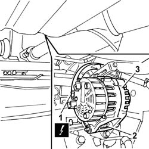

5530A14 ALTERNATOR - R+R FOR VERSIONS WITH AIR CONDITIONER
- Path
- Procedures > 55 ELECTRICAL EQUIPMENT > 5530 CURRENT GENERATOR > 5530A ALTERNATOR AND COMPONENTS > 5530A14 ALTERNATOR - R+R FOR VERSIONS WITH AIR CONDITIONER
- Kind
- repair procedure (removal / refitting; the operation number is the code)
- Applies to
- engines: 2.0 16V, 2.8 JTD 8V; all production periods
- Interactive page
- https://sloeber94.github.io/elrnDB-fDct/en/#/244001360
Applies to: engines: 2.0 16V; all production periods
 Removing
Removing
 Refitting
Refitting- Disconnect the negative battery terminal.
Op. 1092B40 AIR CONDITIONER COMPRESSOR/ALTERNATOR DRIVE BELT - R + R
See in Op. 1092G15
See in Op. 1092G20
1. Remove the plastic protectors.
2. Undo the retaining nuts.
3. Disconnect the electrical connections.
 | Description | Connector |
|---|---|---|
3 | Alternator | A010A |
| Description | Connector |
|---|---|---|
3 | Alternator | A010B |
4. Unscrew the reaction bracket retaining bolt.
5. Undo retaining bolts (5a) and remove alternator (5b).

Applies to: engines: 2.0 16V; all production periods
Refitting
Removing- Position the alternator and tighten the retaining bolts.
- Tighten the reaction bracket retaining nut.
- Position the leads and tighten the retaining nuts.
| Description | Connector |
|---|---|---|
. | Alternator | A010A |
| Description | Connector |
|---|---|---|
. | Alternator | A010B |
See in Op. 1092G20
See in Op. 1092G15
Op. 1092B40 AIR CONDITIONER COMPRESSOR/ALTERNATOR DRIVE BELT - R + R
- Connect the negative battery terminal.
Applies to: engines: 2.8 JTD 8V; all production periods
Removing
Refitting- Disconnect the negative battery terminal.
Op. 1092D10 AIR CONDITIONER COMPRESSOR DRIVE BELT - R + R
Op. 1092B51 ALTERNATO/WATER PUMP DRIVE BELT - R+R FOR VERSIONS WITH AIR CONDITIONER
Op. 7055B54 UNDER-ENGINE GUARD - R R
1. Disconnect the cables on the alternator undoing the fixing nuts.
| Description | Connector |
|---|---|---|
1 | Alternator | A010A |
| Description | Connector |
|---|---|---|
1 | Alternator | A010B |
2. Undo the bolts fixing the alternator.
3. Remove the alternator.

Applies to: engines: 2.8 JTD 8V; all production periods
Refitting
Removing- Secure the alternator tightening the fixing bolts to torque.
- Connect the leads to the alternator tightening the fixing nuts.
| Description | Connector |
|---|---|---|
. | Alternator | A010A |
| Description | Connector |
|---|---|---|
. | Alternator | A010B |
Op. 7055B54 UNDER-ENGINE GUARD - R R
Op. 1092B51 ALTERNATO/WATER PUMP DRIVE BELT - R+R FOR VERSIONS WITH AIR CONDITIONER
Op. 1092D10 AIR CONDITIONER COMPRESSOR DRIVE BELT - R + R
- Connect the negative battery terminal.
Topics linked from this page (4)
- 1092B40 AIR CONDITIONER COMPRESSOR/ALTERNATOR DRIVE BELT - R + R
- 1092B51 ALTERNATO/WATER PUMP DRIVE BELT - R+R FOR VERSIONS WITH AIR CONDITIONER
- 1092D10 AIR CONDITIONER COMPRESSOR DRIVE BELT - R + R
- 7055B54 UNDER-ENGINE GUARD - R R
Topics that link to this page (6)
- 1020D13 FRONT CRANKSHAFT OIL SEAL COVER- R+R AND REPLACE GASKETS FOR VERSIONS WITH AIR CONDITIONER
- 1084B10 ENGINE OIL PUMP - R + R WITH CRANKCASE SUMP REMOVED
- 1088C10 WATER PUMP - R + R
- 1088C14 WATER PUMP - R + R WITH DRIVE BELT REMOVED
- 1088D26 RIGID INTAKE PIPE TO WATER PUMP - R+R FOR VERSIONS WITH A/C
- 5530A40 ALTERNATOR BRACKETS/MOUNT/SPACER - R R